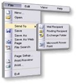

The Zapatec DHTML Menu Overview
 A navigation bar or menu is one of the most important elements of your website. The Zapatec DHTML Menu is a search engine friendly, attractive, and versatile way to help your users navigate your web site. Start by checking out our demo menus and
see the various ways the Zapatec DHTML Menu can be used.
The feature list
describes the different features that make the Zapatec DHTML Menu unique.
Start by checking out our demo menus and
see the various ways the Zapatec DHTML Menu can be used.
The feature list
describes the different features that make the Zapatec DHTML Menu unique.